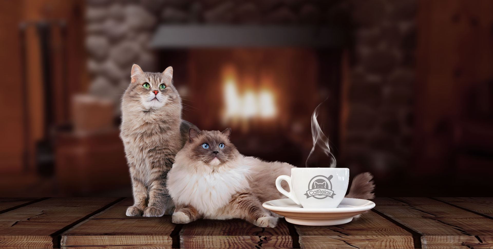
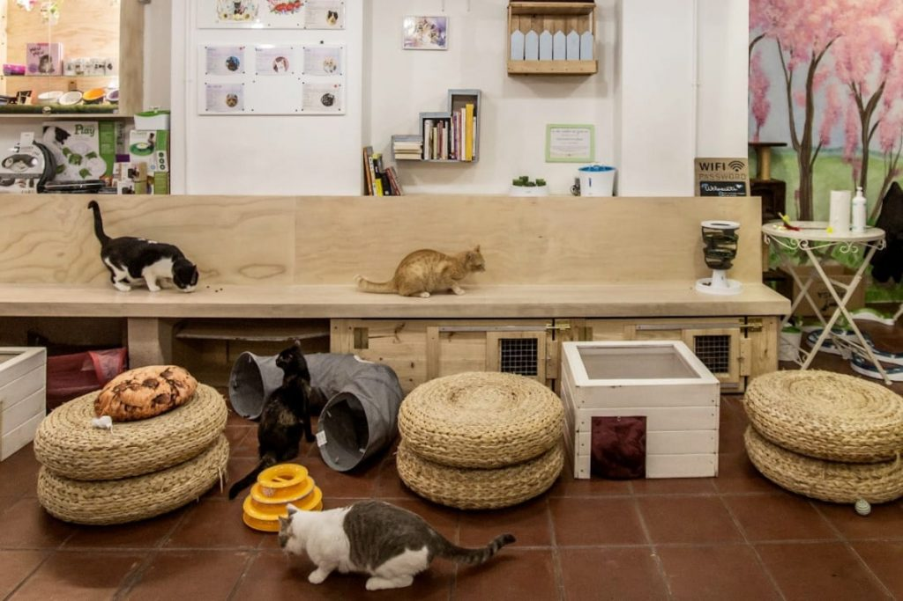
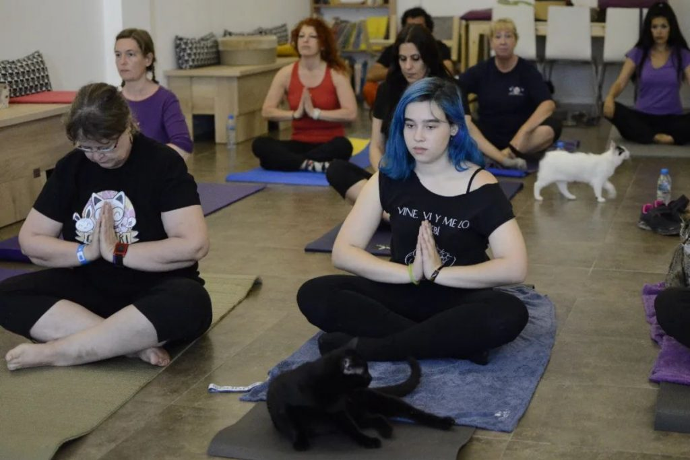
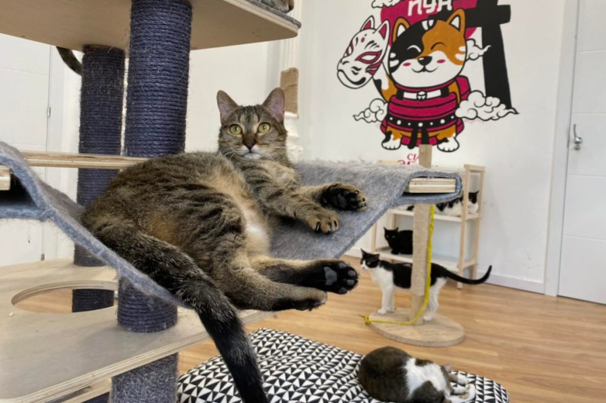
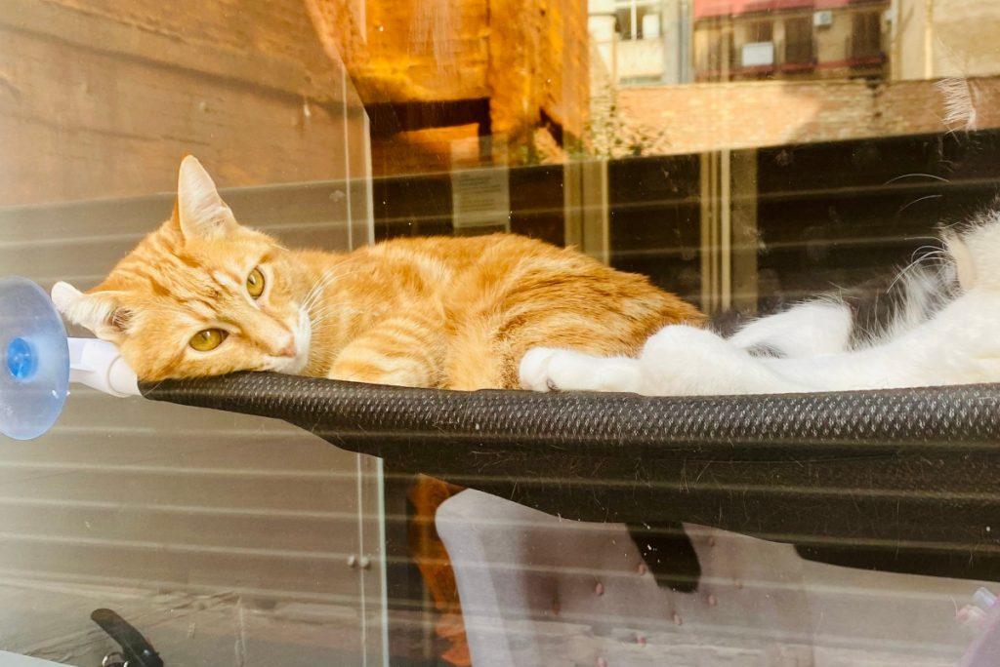

<!DOCTYPE html>
<html lang="es">
</html>
<head>
    <meta charset="UTF-8">
    <meta name="viewport" content="width=device-width, initial-scale=1.0">
    <link rel="icon" type="catfeterias\miau.ico" href="miau.ico">
    <title>CATFETERIAS</title>
    <link rel="stylesheet" href="style.css">
</head>
<body>
<header>
    <h1>CATFETERIAS</h1>
</header>
<ul class="menu">
    <li><a href="razas.html">Inicio</a></li>
    <li><a href="conocenos.html">Conócenos</a>
        <ul class="submenu">
            <li><a href="razasdegatos.html">Razas de gatos</a></li>
            <li><a href="Cuidados.html">Cuidados</a></li>
        </ul>
    </li>
    <li><a href="catfeterias.html">Gatotecas</a>
        <ul class="submenu">
            <li><a href="gatotecas.nacionales.html">Gatotecas nacionales</a></li>
            <li><a href="gatotecas.internacionacionales.html">Gatotecas internacionacionales</a></li>
        </ul>
    </li>
    <li><a href="recibenoticias.html">Recibe Noticias</a></li>
</ul>

    <div class="grid-container">
        <div class="grid-item">
            
            <a href="#"> conoce michis en Santander </a>
        </div>

        <div class="grid-item">
            
            <a href="#"> A divertir-se amb els gatetes a Alacant </a>
        </div>

        <div class="grid-item">
            
            <a href="#"> perd-te a l'espai dels més peluts </a>
        </div>

        <div class="grid-item">
            
            <a href="#"> Michis a Barcelona</a>
        </div>

        <div class="grid-item">
            
            <a href="#"> Omoshiroi neko-tachi ni aimashō </a>
        </div>

        <div class="grid-item">
            
            <a href="#"> conoce michis en Murcia</a>
        </div>
        
        <div class="grid-item">
            
            <a href="#"> katutxoak bilbon  </a>
        </div>
    </div>
    <div>
        <h2><center> <br>¿Quieres saber el origen de las Catfeterias?</center></h2>
        <p>Origen de los Cat Cafes se originó en Taiwan a principios de la decada de 1990
            y rapidamente se extendio a Japón donde ganó una popularidad abrumadora. La idea era sencilla pero innovadora: proporcionar un espacio acogedor donde los amantes de los gatos pudieran disfrutar 
            de la compañía de estos felinos mientras saboreaban una taza de café o té y descubre más sobre nosotros.
            
            Ambas combinaciones formatlecen y fomentan la adopción de gatos, ya que muchos de estos cafés colaboran con refugios locales para ayudar a encontrar hogares permanentes para los gatos que albergan.
            En estos lugares, los visitantes pueden interactuar con los gatos, jugar con ellos y, en algunos casos, incluso adoptar a uno de ellos. Además, los cat cafés suelen ofrecer un 
            ambiente relajante y acogedor, lo que los convierte en un lugar ideal para escapar del estrés diario y disfrutar de la compañía de estos adorables animales.
        </p>

        <h3><center> Do you want to know the origin of cafeterias? </center> </h3>
            <p> The origin of cat cafes originated in Taiwan in the early 1990s and quickly spread to Japan, where they gained overwhelming popularity. 
            The idea was simple but innovative: to provide a welcoming space where cat lovers could enjoy the company of these felines while enjoying 
            a cup of coffee or tea and learning more about us.

            Both combinations foster and encourage cat adoption, as many of these cafes collaborate with local shelters to help find permanent homes for the cats they house.
            In these places, visitors can interact with the cats, play with them, and in some cases, even adopt one. Additionally, cat cafes typically offer a relaxing and 
            welcoming atmosphere, making them an ideal place to escape from everyday stress and enjoy the company of these adorable animals.</p>
    </div>
</body>
<footer>
    <center>
        <p>© 2025 Razas Gatunas </p>
    </center>
</footer>
